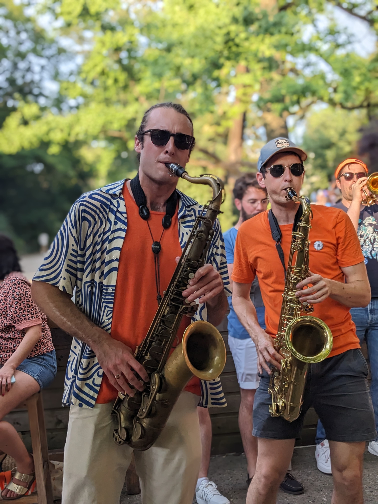
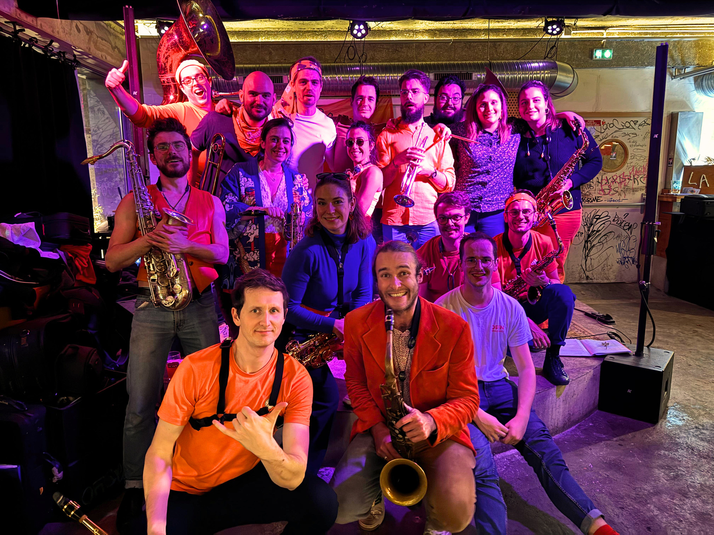
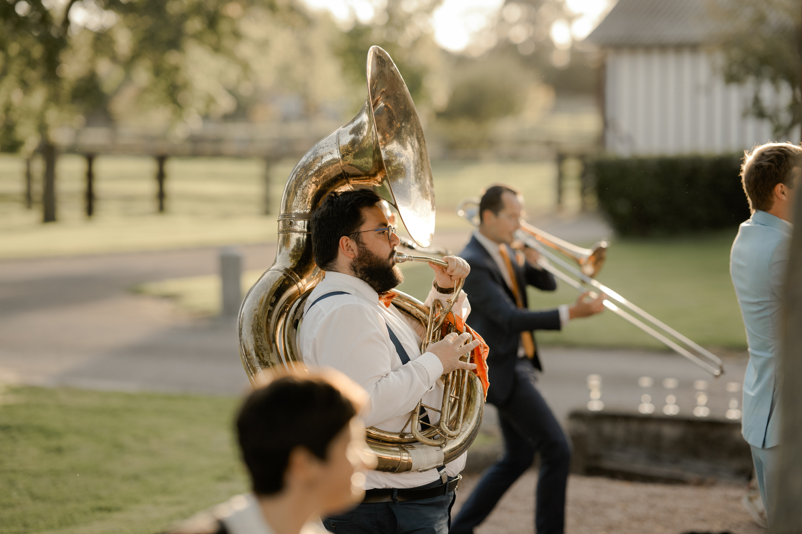
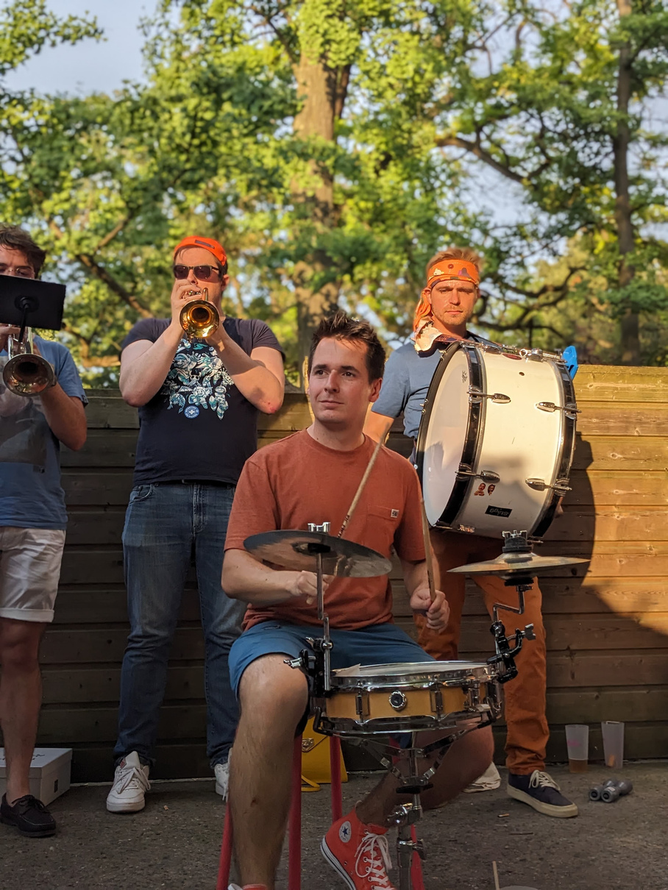
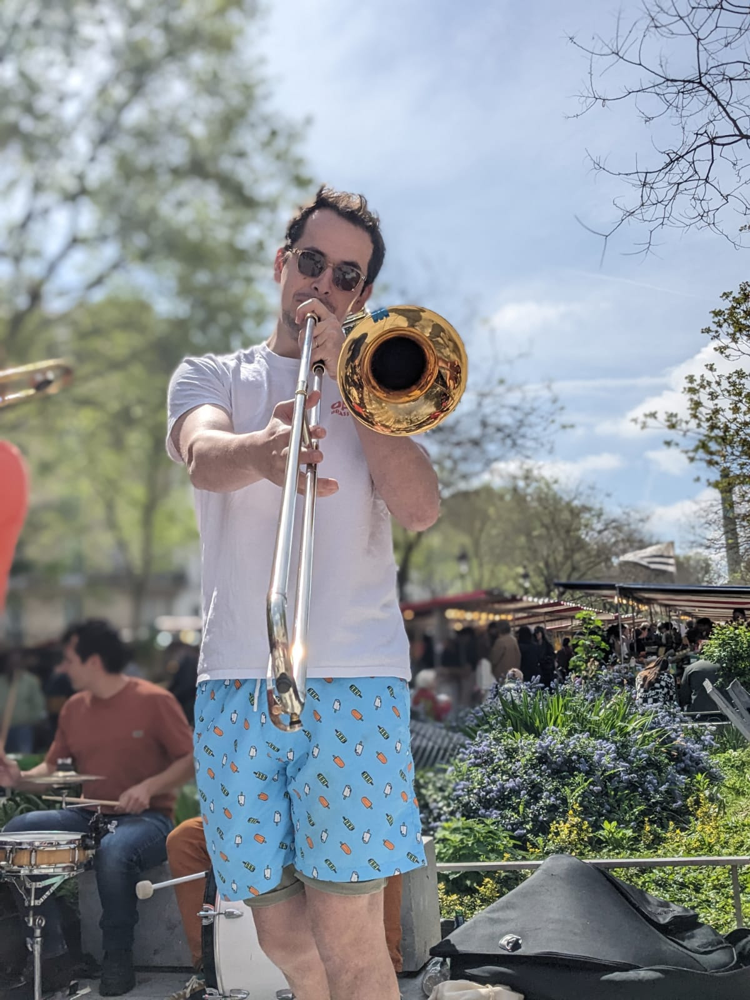

Événements d’entreprise
Temps fort, lancement, soirée, séminaire ou animation. Une formation mobile, directe et fédératrice.
Une joyeuse bande d’une vingtaine de musiciens qui offre un cocktail puissant et réconfortant, là où la pop rencontre le brass band. De Daft Punk à Beyoncé, en passant par France Gall, un seul mot d’ordre : kiffer.
Open Brass Band, c’est l’énergie d’une fanfare qui fait vibrer les murs et met le public en mouvement. Cuivres et percussions secouent, électrisent et réchauffent l’ambiance en quelques notes.
Tout commence dans une fanfare étudiante. En 2018, l’envie de prolonger l’aventure donne naissance à Open Brass Band. Depuis, le collectif grandit, accueille de nouveaux musiciens et partage la même envie de jouer librement.

Temps fort, lancement, soirée, séminaire ou animation. Une formation mobile, directe et fédératrice.
Une fanfare généreuse pour les festivals, fêtes municipales, programmations culturelles et grands rassemblements.
Une présence scénique puissante, des arrangements originaux et une proximité immédiate avec le public.

Concert en plein air

Festival et grand public

Concert en salle

De Daft Punk à Lucky Chops, de Beyoncé à Meute ou France Gall.
Nos morceaux sont réarrangés à notre sauce. L’improvisation reste au cœur du jeu, les solos fusent, et les musiciens peuvent changer d’instrument en plein set. Une musique vivante, mobile et jamais figée.
Voir le clip Club Mix
En 2024, Open Brass Band franchit une nouvelle étape avec l’enregistrement de Premier Brassin. Un concentré de toutes nos influences, enregistré en studio, accompagné de clips et de vinyles.
À savourer en soirée, au coin du feu ou sur la route, fenêtres grandes ouvertes.